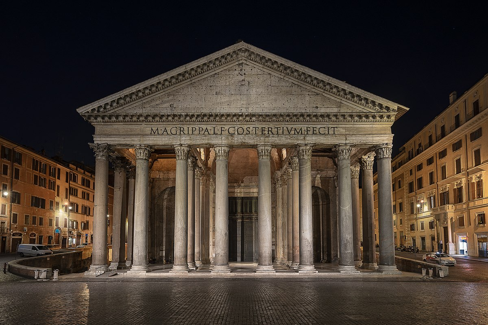

Roma: tra storia e futuro
È stata fondata secondo la tradizione il 21 aprile del 753 a.C. da Romolo (sebbene scavi recenti nel Lapis niger farebbero risalire la fondazione a 2 secoli prima), nel corso dei suoi tre millenni di storia è stata la prima metropoli dell'Occidente, cuore pulsante di una delle più importanti civiltà antiche, che influenzò la società, la cultura, la lingua, la letteratura, l'arte, l'architettura, l'urbanistica, l'ingegneria civile, la filosofia, la religione, il diritto e i costumi dei secoli successivi. Luogo di origine della lingua latina, fu capitale dell'antico Stato romano che estendeva il suo dominio su tutto il bacino del Mediterraneo e gran parte dell'Europa, dello Stato Pontificio, sottoposto al potere temporale dei papi e del Regno d'Italia (dal 1871 al 1946). Per antonomasia, è definita l'Urbe, Caput Mundi e Città eterna.
Oggi Roma grazie alla sua storia valuta di una ricchissima cultura che ogni anno attira turisti italiani e stranieri da tutt il globo

Scopri i piatti della tradizione romana.